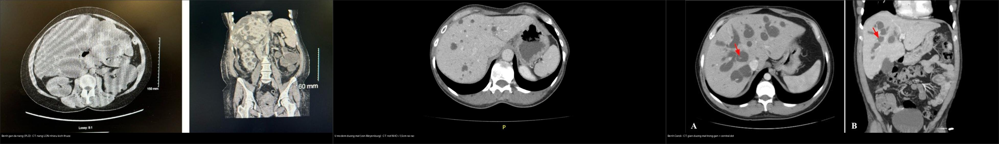
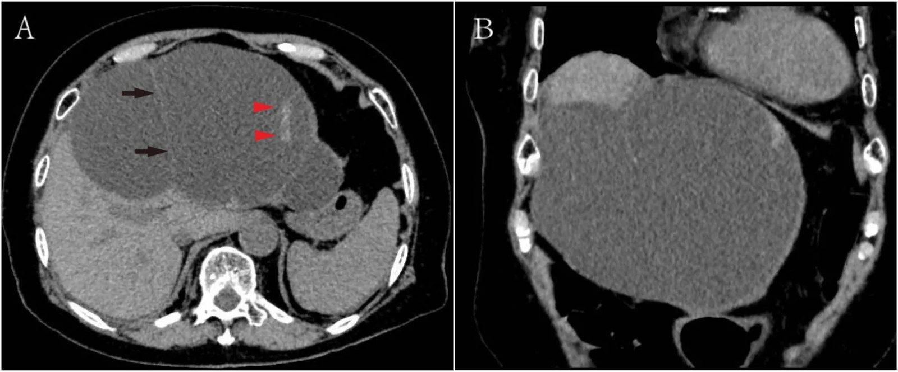
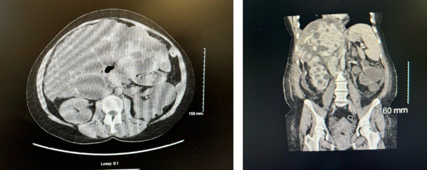
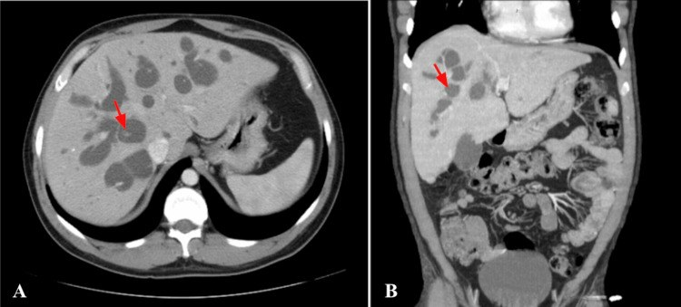
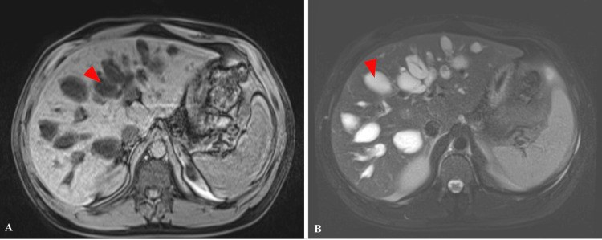
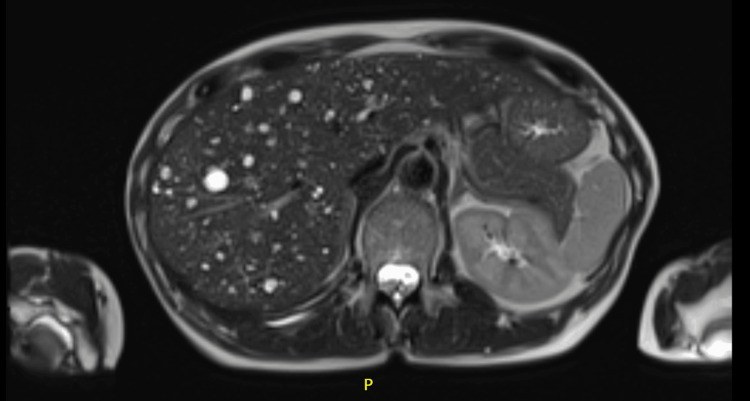
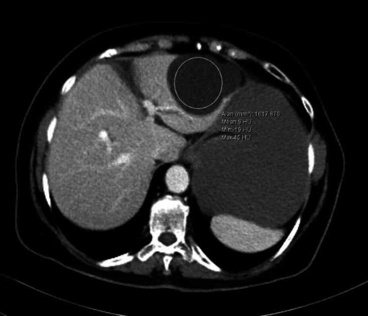
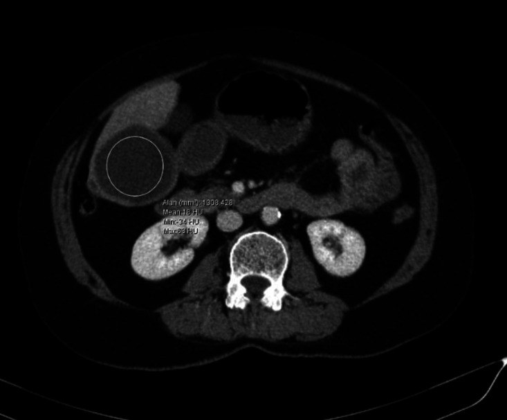
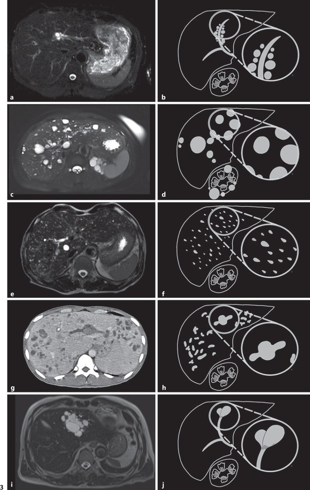

123 — Nang gan & bệnh gan đa nang: đơn thuần, PLD/Caroli vs u mô đệm đường mật (von Meyenburg) / Hepatic cysts & polycystic liver disease
Tags: pattern:nang-gan vung:gan score:Gigot protocol:MRCP incidentaloma:nang-gan
Mức chắc chắn (certainty): tổng hợp y văn (literature synthesis) — nhóm tự biên từ y văn mở (Front Surg 2026, Clin Case Rep 2026, Cureus 2026, J Int Med Res 2026, GE Port J Gastroenterol 2023, J Clin Exp Hepatol 2026, J Surg Case Rep 2025), số liệu lấy nguyên từ bài gốc.
1. Tổng quan — vì sao có "một nang" và vì sao có "cả gan đầy nang"
- Nang gan đơn thuần (simple hepatic cyst): nang bẩm sinh từ mảnh ống mật lạc chỗ (biliary microhamartoma) KHÔNG thông với cây mật, thành là biểu mô đường mật hình khối/thấp trên mô xơ, chứa dịch huyết thanh (PMC13631860).
- TẠI SAO hình ảnh "thuần dịch": dịch nước tự do → T1 tối, T2 rất sáng (thời gian T2 dài), đậm độ gần nước 0–15 HU, không ngấm cản quang (không có mạch máu), thành không thấy được vì chỉ vài mm; không có mô đặc nên không hạn chế khuếch tán, không ngấm vỏ.
- Bệnh gan đa nang (polycystic liver disease — PLD): bệnh di truyền trội/ặn của dị dạng tấm ống mật (ductal plate malformation), chia 3 nhóm:
- PLD kèm ADPKD (autosomal dominant polycystic kidney disease, gen PKD1/PKD2) — thể PLD hay gặp nhất; ADPKD là bệnh thận di truyền phổ biến nhất (≈ 1/1.000 dân số, chiếm 6–10% bệnh nhân cần điều trị thay thế thận trên toàn cầu).
- PLD đơn độc ADPLD (autosomal dominant polycystic liver disease, gen PRKCSH [hepatocystin] và SEC63 là hay gặp nhất; còn GANAB, ALG8, LRP5, SEC61B, PKHD1) — tần suất ~1/100.000 (có nguồn thấp tới 1/1.000.000); nang ở ADPLD thường nhiều và lớn hơn nang gan của ADPKD.
- ARPKD (gen PKHD1) — hiếm (~1/20.000), gây xơ gan bẩm sinh — họ hàng với Caroli.
- Chẩn đoán PLD trên hình ảnh = ≥ 10 nang gan (giảm còn ≥ 4 nang nếu đã xác nhận tiền sử gia đình) (PMC13545369).
- Yếu tố thúc đẩy: giới nữ — 94% số bệnh nhân có triệu chứng là nữ, do estrogen kích thích tăng sinh cholangiocyte; gan tăng nhanh hơn khi dùng hormone thay thế.
- Bệnh Caroli (Caroli disease): giãn đường mật trong gan từng đoạn dạng túi/khúc khuỷu, THÔNG với cây mật, do dị dạng tấm ống mật, gene PKHD1; tần suất ~1/1.000.000.
- Caroli syndrome = Caroli + xơ gan bẩm sinh (tăng áp cửa) — chỉ phân biệt được bằng mô bệnh học, hình ảnh không tách được 2 thể (PMC13409416).
- Nguy cơ ung thư đường mật trong gan (cholangiocarcinoma) 6,6%–37% → phải tầm soát suốt đời (PMC13409416).
- U mô đệm đường mật / nốt von Meyenburg (biliary hamartoma / von Meyenburg complex — VMC): dị dạng tấm ống mật lành tính, nhiều nốt nhỏ < 15 mm rải rác nhu mô gan, KHÔNG thông cây mật, T1 tối + T2 rất sáng tạo hình "trời sao" (starry-sky); 0,6–5,6% trong mổ tử thi (PMC13367765).
- 4 câu hỏi chốt khi gặp nang gan: (1) MỘT hay NHIỀU? (2) dịch đơn thuần hay có vách/nốt đặc ngấm? (3) CÓ thông với cây mật không (MRCP)? (4) nang LỚN hay nốt NHỎ < 1,5 cm rải rác?
2. Mẫu hình — gamut theo SỐ LƯỢNG & KÍCH THƯỚC (Gamut)
- Một/vài nang lớn, dịch đơn thuần, không ngấm → nang gan đơn thuần (thường < 3 cm, có thể khổng lồ 20 cm gây chèn ép/vỡ).
- Rất nhiều nang LỚN đa dạng kích thước, thường kèm nang thận → PLD (ADPKD/ADPLD); gan có thể to gấp ~10 lần bình thường → hội chứng chèn ép (ăn mau no, buồn nôn, khó thở).
- Nhiều nốt NHỎ < 1,5 cm rải rác toàn gan, "trời sao" T2, không ngấm → u mô đệm đường mật (VMC) — giả di căn gan hay gây chỉ định chụp/soi sai.
- Giãn đường mật từng đoạn dạng túi + "điểm ngấm trung tâm" (central dot sign), thông cây mật → bệnh Caroli.
- Nang dọc theo bó mạch cửa (bắt cặp với nhánh mật) → nang quanh đường mật (peribiliary cysts) — hay gặp trên nền xơ gan/tăng áp cửa.
- Nang có vách dày/nốt đặc ngấm thành/ngấm vỏ → di căn gan dạng nang hoặc u nhầy đường mật (biliary cystadenoma/IPNB).
- Nang thành dày + vôi hóa + tách màng nổi → nang sán (hydatid cyst).
- Nang + sốt + khí trong ổ + ngấm viền → áp-xe gan.
- Gợi nhớ "S-C-V-P": Simple cyst · Caroli · Von Meyenburg · Polycystic liver disease.
3. Bảng so sánh phân biệt (ma trận đối chiếu)
| Thực thể (entity) | Hình ảnh điển hình | Chốt vào (rule-in) | Chốt loại (rule-out) | Gợi ý xác nhận |
|---|---|---|---|---|
| Nang gan đơn thuần | Nang tròn/bầu dục, 0–15 HU, thành không thấy, T2 rất sáng, không ngấm, không vách | Dịch thuần nhất + không ngấm + không thông cây mật | Vách/nốt ngấm, thành dày, có mảnh/màng → loại trừ u/nang sán | Siêu âm + CT/MRI không cản quang; chọc hút khi có triệu chứng |
| PLD (ADPKD/ADPLD) | Nhiều nang lớn đa dạng toàn gan, thường kèm nang thận; gan to | ≥ 10 nang gan (≥ 4 nếu có tiền sử gia đình) + nang thận | Số nốt nhỏ đều < 1,5 cm rải rác → VMC | Bệnh sử gia đình, gene PKD1/PKD2/PRKCSH/SEC63, MRI đo thể tích gan |
| Bệnh Caroli | Giãn đường mật từng đoạn dạng túi + central dot sign, có thông với cây mật | Thông cây mật (MRCP) + central dot | Không thông cây mật + nốt nhỏ → VMC | MRCP + CT/MRI; sinh thiết gan tìm xơ gan bẩm sinh |
| U mô đệm đường mật (VMC) | Nhiều nốt < 1,5 cm rải rác, T1 tối / T2 rất sáng "trời sao", không ngấm | Nốt nhỏ đều + T2 rất sáng + KHÔNG ngấm + KHÔNG thông cây mật | Nốt ngấm/vách/thành dày, có u nguyên phát → di căn | MRCP (không thông mật) + theo dõi không lớn |
| Di căn gan dạng nang | Nang vách dày + nốt đặc ngấm thành, ngấm vỏ, tăng kích thước | Nốt đặc ngấm thành + có ung thư nguyên phát | Dịch thuần nhất không ngấm → lành | CT đa thì/PET; đối chiếu phim cũ |
| Nang sán (hydatid type 1) | Nang thành dày, có thể tách màng/hạt sán; đậm độ KHÔNG phân biệt được với nang đơn thuần | Tiền sử dịch tễ + thành dày + ELISA (+) + kích thước lớn | Thành mỏng + ELISA (−) + kích thước nhỏ → nang đơn thuần | ELISA, siêu âm WHO, không chọc mù |

Trái: PLD — nang LỚN đa dạng (gan + thận). Giữa: VMC (von Meyenburg) — nốt NHỎ < 1,5 cm rải rác. Phải: Caroli — giãn đường mật túi + central dot (mũi tên đỏ). Nguồn: Brossart 2026 (PMC12881206) + Masued 2026 (PMC13367765) + Usman 2026 (PMC13409416), CC BY 4.0. Ảnh ghép letterbox.Đọc chuẩn "central dot sign" và "thông cây mật"
- Central dot sign: nhánh mạch cửa ngấm cản quang nằm ngay trong lòng túi mật giãn bị bao quanh bởi dịch mật — rất đặc hiệu cho Caroli (PMC13409416). KHÔNG nhầm với nốt đặc ngấm trong lòng nang (di căn/ung thư).
- Thông cây mật (biliary communication) là mấu chốt tách Caroli khỏi VMC và nang đơn thuần: VMC và nang đơn thuần KHÔNG thông; Caroli CÓ thông — chỉ thấy rõ trên MRCP (đôi khi cần mật đồ thì muộn).
4. Protocol chụp + phân độ Gigot + tầm soát theo bệnh nền
- Siêu âm bụng là đầu tay: phân biệt nang dịch đơn thuần vs nang có thành/vách/nốt; đo kích thước.
- MRI + MRCP (không cản quang) là chìa khóa: xác định có thông cây mật hay không (Caroli vs VMC/nang đơn thuần), tín hiệu T1/T2, và đo thể tích gan (total liver volume — TLV). CT đa thì khi nghi u đặc/ngấm (di căn nang, u nhầy đường mật).
- Phân độ Gigot (theo số lượng + kích thước nang + nhu mô gan còn lại) — dùng để quyết định điều trị PLD (PMC13545369):
- Gigot I: < 10 nang lớn (> 10 cm), còn nhiều nhu mô gan lành.
- Gigot II: nang trung bình rải rác khắp gan, vẫn nhận ra nhu mô gan giữa các nang.
- Gigot III: nang nhỏ–trung bình lan tỏa dày đặc, còn rất ít nhu mô (thể nặng nhất).
- Điều trị định lượng: nang đơn thuần có triệu chứng → chọc hút + xơ hóa (tetracycline/minocycline/bleomycin; tiêm cồn tuyệt đối); PLD → thuốc ức chế somatostatin (octreotide/lanreotide) làm giảm thể tích gan, hoặc phẫu thuật/truyền dịch qua da–cửa chủ (TIPS)/ghép gan khi Gigot III; Caroli → kháng sinh + tầm soát cholangiocarcinoma, ghép gan khi suy gan/tăng áp cửa.
- Tầm soát phối hợp (bắt buộc khi nghĩ PLD): siêu âm/CT thận (nang thận → ADPKD), tầm soát phình mạch não ở ADPKD, và cả gia đình (di truyền trội). Caroli → tầm soát ung thư đường mật suốt đời.
flowchart TD
A[Phat hien NANG GAN] --> B{Nhieu nang hay mot-vai nang?}
B -->|Mot-vai nang lon| C[Dich don thuan khong ngam = nang gan don thuan]
B -->|Nhieu nang| D{Kich thuoc?}
D -->|Not NHO < 1,5 cm rai rac, T2 'troi sao'| E[U mo dem duong mat - von Meyenburg]
D -->|Nang LON da dang + nang than| F[PLD: ADPLD hay ADPKD]
A --> G{Co THONG voi cay mat khong? MRCP}
G -->|Co + central dot| H[Benh Caroli -> tam soat cholangiocarcinoma]
C --> I{Co trieu chung khong?}
I -->|Co| J[Choc hut + xo hoa]
I -->|Khong| K[Theo doi dinh ky]
F --> L{Gigot I-II-III?}
L -->|I-II| M[Theo doi / somatostatin analog]
L -->|III nang| N[Mo giam the tich / ghep gan]
A --> O{Vach day / not dac NGAM thanh?}
O -->|Co| P[Di can nang / u nhay duong mat -> CT da thi + PCT]
5. Biến thể bình thường và cạm bẫy
- U mô đệm đường mật (VMC) giả di căn gan — cạm bẫy kinh điển: hình ảnh nhiều nốt nhỏ dễ bị gọi là "di căn gan đa ổ" → chỉ định PET, sinh thiết oan. Chốt lành: < 1,5 cm + T2 rất sáng "trời sao" + không ngấm + không thông cây mật + KHÔNG có u nguyên phát + không lớn theo thời gian (PMC13367765).
- Nang sán type 1 vs nang gan đơn thuần — ĐẬM ĐỘ KHÔNG GIÚP PHÂN BIỆT: nghiên cứu CT đậm độ cho thấy nang sán 9,2 ± 8,8 HU vs nang đơn thuần 7,3 ± 6,5 HU (p = 0,30); cut-off 8,5 HU chỉ Se 43,1%/Sp 72,2%, AUC 54,6% → vô dụng. Chốt lại bằng thành dày (nang sán lớn hơn: 55,9 ± 30,0 mm vs 25,6 ± 12,4 mm, p < 0,001), tách màng nổi, tiền sử dịch tễ và ELISA. TUYỆT ĐỐI không chọc hút mù (nguy cơ sốc phản vệ/rải sán) (PMC13396558).
- Caroli vs VMC vs PLD: cả ba đều "nhiều nang gan" — chốt bằng CÓ thông cây mật không (MRCP) và kích thước nốt (VMC < 1,5 cm; PLD nang lớn; Caroli có thông + central dot).
- Nang gan lớn tách màng/chảy máu nội nang trông "phức tạp nhưng vẫn lành": nang đơn thuần khổng lồ (20 cm) có thể vỡ + chảy máu với hình ảnh phức tạp trên CT, nhưng mô bệnh học vẫn là nang gan đơn thuần (không có nhú mô đệm kiểu u nhầy) (PMC13631860).
- PLD vs ACKD (xem bài 153): PLD = gan đầy nang, thận có thể to khổng lồ (ADPKD); ACKD = thận NHỎ nhiều nang ở người lọc máu, gan không phải mấu chốt.
- PLD + xuất huyết tái diễn — đừng chỉ nghĩ nang vỡ: hiếm khi có u mạch máu ác tính (epithelioid angiosarcoma) nằm dưới nền PLD gây chảy máu lặp lại — cần nghi ngờ khi chảy máu tái phát không cắt được nguồn (PMC12222048).
- Nang quanh đường mật (peribiliary cysts) bám dọc bó mạch cửa, không thông mật — dễ nhầm nang đơn thuần/PLD; gắn bối cảnh xơ gan/tăng áp cửa (PMC10521313).
6. Tự lượng giá — Blind Quiz
Ca 1 — Nữ 94 tuổi, đau bụng cấp, tụt Hb, CT bụng không cản quang.

- Hỏi: mô tả tổn thương? Nang thuần dịch hay có thành phần đặc? Chẩn đoán và biến chứng cần nghĩ nhất?
Bấm để hiện đáp án (findings + chẩn đoán)
- Findings: nang ~20 cm thùy trái gan, có vách mảnh + vùng tăng đậm độ lốm đốm (máu trong nang) và màng/thành mỏng — không có phần đặc ngấm kiểu u.
- Chẩn đoán: nang gan đơn thuần khổng lồ vỡ + chảy máu (hemoperitoneum) — mô bệnh xác nhận nang đơn thuần. Đối chiếu: u nhầy đường mật sẽ có nhú mô đệm kiểu buồng trứng (MCN-L) — đã bị loại bằng mô bệnh.
- Nguồn: Qiu J et al., Front Surg 2026, Fig. 1, PMC13631860, CC BY 4.0.
Ca 2 — CT bụng ở bệnh nhân có nang thận: nhiều nang gan LỚN đa dạng kích thước.

- Hỏi: số lượng/kích thước nang gợi gì? Có bằng chứng phối hợp ngoài gan? Chẩn đoán và gene liên quan?
Bấm để hiện đáp án (findings + chẩn đoán)
- Findings: nhiều nang lớn ở gan + nang thận hai bên → PLD kèm ADPKD. Tiêu chuẩn hình ảnh PLD: ≥ 10 nang gan (≥ 4 nếu có tiền sử gia đình).
- Chẩn đoán: PLD (ADPKD — PKD1/PKD2; hoặc ADPLD — PRKCSH/SEC63). Xử trí theo Gigot; cần tầm soát phình mạch não/van tim và tầm soát gia đình.
- Nguồn: Brossart AK et al., Clin Case Rep 2026, Fig. 2, PMC12881206, CC BY 4.0.
Ca 3 — Nữ 38 tuổi, sốt cao tái diễn + đau hạ sườn phải; CT bụng cản quang thì cửa.

- Hỏi: tổn thương là nang hay giãn đường mật? Dấu hiệu nào đặc hiệu? Cần tầm soát gì về lâu dài?
Bấm để hiện đáp án (findings + chẩn đoán)
- Findings: giãn đường mật trong gan từng đoạn dạng túi/khúc khuỷu + nhánh mạch cửa ngấm nằm TRONG lòng túi = "central dot sign" (mũi tên đỏ).
- Chẩn đoán: bệnh Caroli (thông với cây mật, khác VMC và nang đơn thuần). Nếu kèm xơ gan bẩm sinh → Caroli syndrome (phân biệt bằng mô bệnh).
- Quan trọng: nguy cơ ung thư đường mật 6,6%–37% → tầm soát suốt đời.
- Nguồn: Usman M et al., Cureus 2026, Fig. 1, PMC13409416, CC BY 4.0.
Ca 4 — MRI bệnh nhân có giãn đường mật trong gan (T1 sau tiêm + T2 fat-sat).

- Hỏi: so với CT (Ca 3), MRI thêm được thông tin gì để chốt Caroli?
Bấm để hiện đáp án (findings + chẩn đoán)
- Findings: nhiều giãn túi ĐM/DM đường mật trong gan — T1 sau tiêm giảm tín hiệu, KHÔNG có thành ngấm (không phải nang có vỏ/khối); T2 fat-sat rất sáng (dịch mật).
- Chốt: không có thành ngấm loại trừ u/nang viêm; kết hợp MRCP cho thấy thông với cây mật = Caroli. VMC sẽ không thông và nốt < 1,5 cm.
- Nguồn: Usman M et al., Cureus 2026, Fig. 3, PMC13409416, CC BY 4.0.
Ca 5 — Bệnh nhân tầm soát ung thư: CT thấy nhiều nốt giảm đậm độ rải rác hai gan; MRI T2 tiếp theo.

- Hỏi: có phải di căn gan đa ổ không? Dấu hiệu nào chốt lành tính?
Bấm để hiện đáp án (findings + chẩn đoán)
- Findings: vô số nốt T2 rất sáng rải rác cả hai gan tạo hình "trời sao" (starry sky), đều < 1,5 cm, không ngấm, không thông cây mật trên MRCP, không có u nguyên phát.
- Chẩn đoán: u mô đệm đường mật (von Meyenburg / biliary hamartoma) — lành tính; KHÔNG phải di căn. Tránh PET/sinh thiết oan.
- Nguồn: Masued M et al., Cureus 2026, Fig. 2, PMC13367765, CC BY 4.0.
Ca 6 — Hai bệnh nhân, hai CT bụng: nang lớn thuần dịch và một nang có thành mỏng có thể (A) vs nang thành dày (B).


- Hỏi: hai nang này nhìn khác nhau ở đâu? Đậm độ có giúp phân biệt nang sán với nang gan đơn thuần không? Chốt bằng gì?
Bấm để hiện đáp án (findings + chẩn đoán)
- Findings: A = nang gan đơn thuần (thành rất mỏng, dịch thuần nhất); B = nang sán type 1 (thành dày). Đậm độ trung bình gần như bằng nhau (sán 9,2 HU vs đơn thuần 7,3 HU, p = 0,30).
- Chốt: cut-off 8,5 HU chỉ Se 43,1%/Sp 72,2% (AUC 54,6%) — đậm độ KHÔNG phân biệt được; chốt bằng thành dày + kích thước lớn (55,9 vs 25,6 mm) + ELISA + dịch tễ. Không chọc hút mù nang sán.
- Nguồn: Özkaçmaz S et al., J Int Med Res 2026, Fig. 3–4, PMC13396558, CC BY-NC 4.0 (giữ nguyên bản).
Ca 7 — Bảng đối chiếu các bệnh "nhiều nang gan" (ảnh dọc theo bó mạch cửa).

- Hỏi: thực thể nào bám dọc bó mạch cửa? Phân biệt nhanh các thực thể trong hình bằng 1 tiêu chí mỗi loại?
Bấm để hiện đáp án (findings + chẩn đoán)
- Chốt nhanh (mỗi thực thể 1 tiêu chí): nang quanh đường mật = nang nhỏ bắt cặp dọc bó mạch cửa, không thông mật · PLD = nang lớn rải rác + nang thận · von Meyenburg = nốt < 1,5 cm T2 sáng "trời sao" · Caroli = giãn đường mật thông cây mật + central dot · IPNB = u nhầy trong lòng ống mật gây giãn ống.
- Chốt: chỉ cần vị trí so với bó mạch cửa + kích thước + có thông cây mật không là tách được hầu hết.
- Nguồn: Wongwattanachai A et al., GE Port J Gastroenterol 2023, Fig. 3, PMC10521313, CC BY-NC 4.0 (giữ nguyên bản).
Bài liên quan chéo
- 100 – Tổng quan hệ Bụng
- 120 – Khối gan nền: lành vs xơ
- 121 – LI-RADS & HCC
- 122 – U lành gan & áp-xe
- 131 – Tắc mật
- 136 – U/nang tụy
- 153 – Thận nang mắc phải & ACD-RCC (PLD vs ACKD)
Ảnh
- Tên file:
123_slug_Modality_SourceID.jpg. Nguồn + giấy phép từng ảnh trongimages/CREDITS.md. - Ảnh CC BY-NC (PMC13396558, PMC10521313) giữ nguyên bản, không crop/ghép; ảnh ghép chỉ dùng ảnh CC BY (letterbox nền đen).
Không dùng để chẩn đoán độc lập khi chưa có người hướng dẫn.